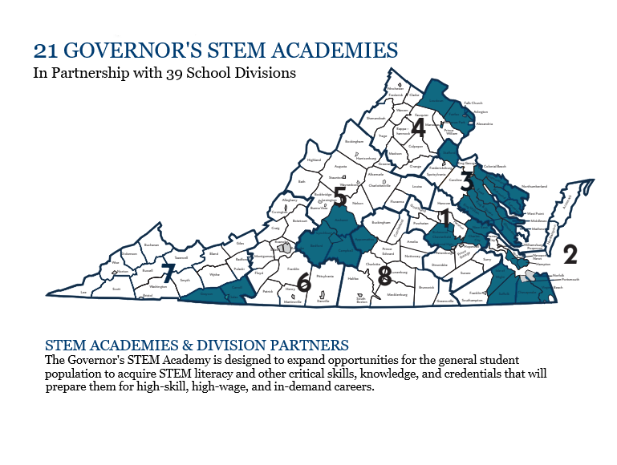

Governor's STEM Academy Exhibit
What is a Governor's STEM Academy?
The state of Virginia has started a program to create Governor's STEM Academies. Arlington Tech is one of them. The purpose of the academies is to try and break down the barriers between education and workplace skills by merging normal academics with Career & Technical Education (CTE). Currently, 21 such academies exist, in a myriad of forms. Some are high schools, some are at community colleges, and others are online.
Career Pathway Requirements
In the guidance document used to establish guidelines for the Academies, more specifics are revealed. Academies are required to have two career pathways that meet the following criteria:
- Allows for opportunity to earn credentials relevant to the career
- One of the two has to be in a field that a statewide authority identifies as a strategic growth area for VA
- One of the two has to be a high-skill, high-wage job, identified to be needed in the surrounding area
- One of the two has to be in STEM
Graduation Requirements
Students of a Governor's STEM Academy also have to meet one of the following graduation requirements:
- Earn 1 or more industry certifications, or show competency on certain assessments
- Earn at least 9 transferable college credits
- Earn an Associate's Degree
Workplace Experience
Students are also required to have some form of workplace experience. Some examples include:
- Shadowing
- Internship
- Mentoring
- Entrepreneurship
Locations
Governor's STEM Academies are located all across Virginia. Here's a map:
